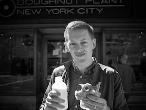

-
Ivete Tecedor,
Backend Developer
Ivete loves to make things and is passionate about coding, eating, knitting, and puppies. Her favorite thing about NYC is the wide variety of excellent food, like the Japanese ramen at Kambi in the East Village.
-
Pat O’Neill,
Senior UI Developer
One of Pat’s favorite things about New York is easy access to culture and knowledge. Since childhood, the American Museum of Natural History has been a constant symbol of the fascinating universe we inhabit.
-
David Ashby,
System Administrator
David is an inveterate reader and tinkerer, dedicated to squeezing every drop of performance out of Kindling’s servers. He loves walking through Central Park and climbing the narrow stairs to the top of Belvedere Castle.
-
Patrick Force,
Lead Developer
Patrick is best known for his performance in the leading role of Developer at Kindling. Other roles include making a mess of himself whilst eating barbeque and drinking beer at Fette Sau in Williamsburg.
-
Desiree Beckman,
Product
There are two things Desiree has loved since childhood: adventure and NYC. Combining the two four years ago, Desiree began working for her very first startup right in the middle of Battery Park (where she even met her husband, her greatest adventure of all).
-
Kate Ruhle,
Strategic Account Executive
Kate moved to MacDougal Street as an idealist at 21, in love with economics and psychology and hoping to work with both. Today she helps companies fully utilize their employees’ knowledge, all the while empowering them as professionals – not far off!
-

Jim Nielsen,
Lead Designer
Jim loves New York’s diversity of people, architecture, and (most importantly) cuisine. From shabu-shabu to al pastor tacos to doughnuts, Jim’s only rival passion to good design is good food.
-
Sima Shimansky,
Director of Customer Services
Sima is a software developer turned Kindling Support guru who loves to find creative ways to problem-solve. She’s passionate about puzzles and other exciting pursuits like hiking, hosting dinner parties, and exploring NY in search of secret gardens and hidden oases.
-
Nicole Silver,
Marketing Manager
Nicole came to New York by way of Boston and DC, and she loves New York’s walkability, skylines, and the history in so many neighborhoods. The West Side Highway is her favorite place to run, walk around with friends, and enjoy the view.
-
Garrett Kalleberg,
CTO
When he’s not building technology, Garrett may be seen sitting somewhere in Greenpoint with his notebook, motorcycling around New Town Creek, or walking with his camera in Chinatown. A native New Yorker, Garrett loves this city of making things.
-
Steve Finnern,
Senior VP, Sales
For Steve, New York memories go back to his first apartment on Irving where he met his wife and became a self-proclaimed coffee snob. Transplanted from San Francisco, his best New York experiences include running in Central Park and delighting in the city’s restaurants.
-
Josh Diehl,
COO
New York is the Jazz capital of the world, so it made perfect sense for Josh to make it his home. When he isn’t working at Kindling, he’s enjoying the city’s vibrant culture.
-
Anthony Ferla,
Strategic Account Executive
Anthony is a proud New Jerseyan and lover of football, and he dreamed one day he would be working in NYC. Whenever Anthony thinks of NYC, the World Trade Center Towers come to mind as a symbol of how strong NYC is and how to overcome adversity when it comes your way.
-
Tim Meaney,
Founder & CEO
Tim loves New York City (almost as much as he loves New Jersey) and thinks it’s the perfect place for a startup. As a lover of history and beer, Tim’s been known to frequent McSorley’s with friends (a tavern visited by both Abraham Lincoln and Teddy Roosevelt).